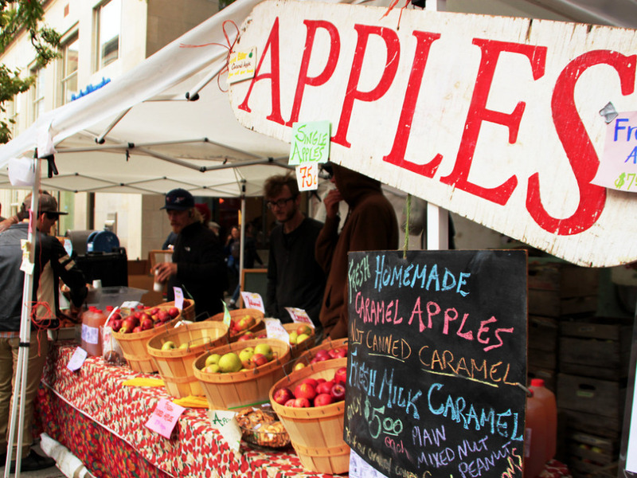

Frequently Asked Questions

- How much money should I bring?
- Entry to the event is completely free! The amount of money you should bring is dependent on what, if anything, you wish to purchase at the festival. If you are driving, there is a $5 charge to park at the parking garage (You can find more parking information here ). If you plan to eat at the festival, you may also wish to bring at least $10. Prices of the various baked goods, produce, and crafts vary by vendor. Many of our vendors and their items can be found here.
- Can I pay with a credit card?
- Most of our vendors accept credit cards, however, you should bring some cash in case a shop you are interested in does not accept them.
- Can I bring my dog?
- Bringing a dog is strongly discouraged due to pets not being allowed on the Commons. Additionally, the event will be crowded and may be overwhelming for your furry friend, or it may be difficult to move through the crowds. Registered service animals are permitted.
- What should I wear?
- If you are not familiar with the Ithaca area, it can get quite cold in the fall! Check the weather and bring layers.
- When is the best time to attend?
- If you are looking to avoid the crowds, attending midday Friday is a good idea. However, many attendees find that the crowds on the weekend add to the energy and fun of the festival.
- Will there be alcohol?
- Some vendors do sell alcohol (such as hard cider), so be sure to bring your ID if you are over 21. Many of these vendors also offer tastings.